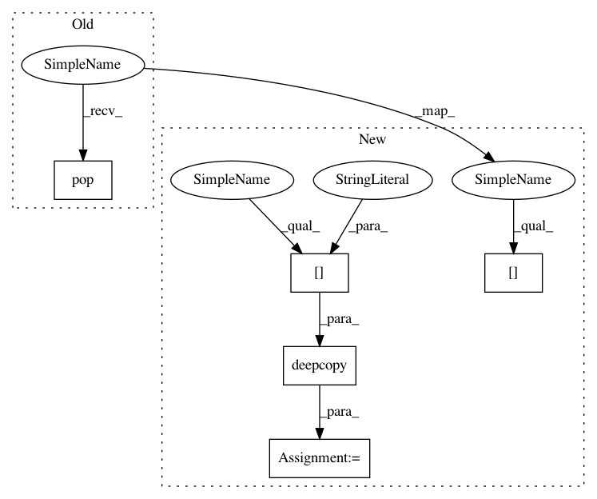

0e49e55d906660e5c9168447c77ebc6d917dda5c,softlearning/policies/utils.py,,get_policy_from_variant,#Any#Any#Any#Any#,58
Before Change
def get_policy_from_variant(variant, env, Qs, preprocessor):
policy_params = variant["policy_params"].copy()
policy_type = policy_params.pop("type")
if policy_type == "GMMPolicy":
assert not policy_params["reparameterize"], (
"GMMPolicy cannot be reparameterized")
After Change
*args,
**kwargs):
policy_params = variant["policy_params"]
policy_type = policy_params["type"]
policy_kwargs = deepcopy(policy_params["kwargs"])
if policy_type == "GMMPolicy":
assert not policy_params["kwargs"]["reparameterize"], (
"GMMPolicy cannot be reparameterized")
In pattern: SUPERPATTERN
Frequency: 3
Non-data size: 5
Instances
Project Name: rail-berkeley/softlearning
Commit Name: 0e49e55d906660e5c9168447c77ebc6d917dda5c
Time: 2018-10-22
Author: hartikainen@berkeley.edu
File Name: softlearning/policies/utils.py
Class Name:
Method Name: get_policy_from_variant
Project Name: rail-berkeley/softlearning
Commit Name: 0e49e55d906660e5c9168447c77ebc6d917dda5c
Time: 2018-10-22
Author: hartikainen@berkeley.edu
File Name: softlearning/replay_pools/utils.py
Class Name:
Method Name: get_replay_pool_from_variant
Project Name: rail-berkeley/softlearning
Commit Name: 0e49e55d906660e5c9168447c77ebc6d917dda5c
Time: 2018-10-22
Author: hartikainen@berkeley.edu
File Name: softlearning/algorithms/utils.py
Class Name:
Method Name: get_algorithm_from_variant
Project Name: rail-berkeley/softlearning
Commit Name: 0e49e55d906660e5c9168447c77ebc6d917dda5c
Time: 2018-10-22
Author: hartikainen@berkeley.edu
File Name: softlearning/policies/utils.py
Class Name:
Method Name: get_policy_from_variant